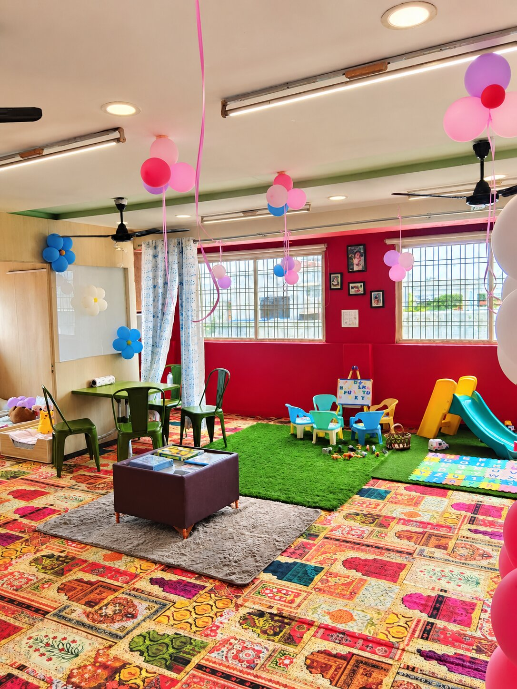
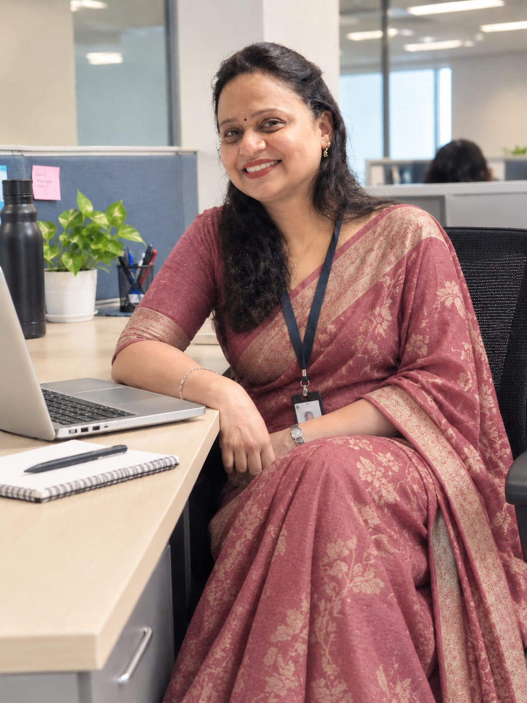
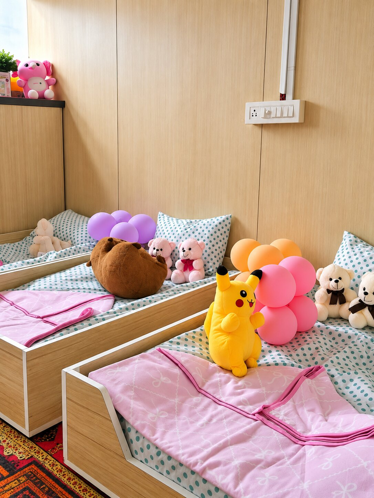
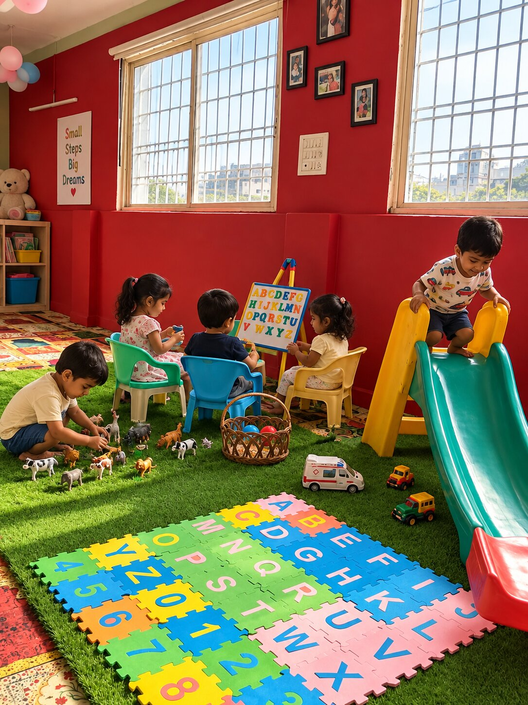
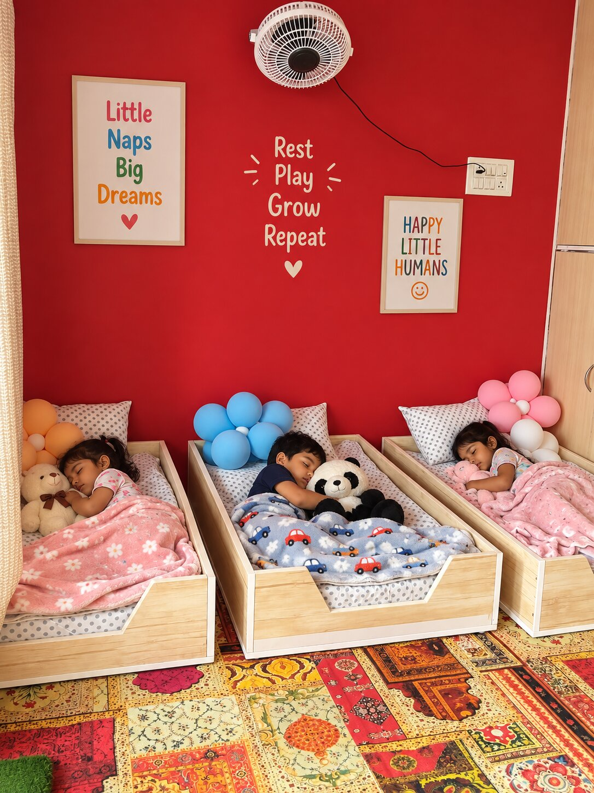

01
Personal Care
Warm, attentive caregiving built around the individual needs and routines of every little one.
KSAR provides a loving, safe and stimulating environment where every child is cared for, encouraged and supported to grow, learn and shine.

Every detail is imagined to help little ones feel comfortable, curious and cared for — while parents can move through their day with confidence.

KSAR was created with a simple belief: every child deserves a safe, loving and joyful environment where they can feel secure, learn freely and grow with confidence.
With a vision to make childcare feel more personal and reassuring for families, I want KSAR to be a place where children feel at home and parents feel confident every day.
A premium childcare experience is not about looking expensive. It is about making parents feel that every detail has been considered.
Warm, attentive caregiving built around the individual needs and routines of every little one.
A secure environment supported by monitoring, controlled access and clear safety practices.
Thoughtful play and age-appropriate experiences that encourage curiosity and development.
Clear communication and a considered experience designed to keep parents connected and confident.
KSAR follows a safety-first approach across the child's day, from arrival and access to supervision, hygiene and emergency preparedness.
KSAR provides a safe, caring and stimulating environment with age-appropriate learning, play, daily routines, nutritious meals and regular parent communication.
CCTV surveillance, secure entry & exit, childproof premises, trained and verified staff, plus first-aid and emergency support.
Trained childcare caregivers with an early-childhood focus, a caring approach and attention to each child's needs.
Daily cleaning and sanitisation, clean toys, bedding and play areas, safe drinking water and regular hygiene practices.
Early learning activities, storytelling, rhymes, music, sensory play, creative activities and Montessori-inspired learning.
Indoor and outdoor play, physical development, fine and gross motor activities, and social-emotional development.
Warm welcome and health checks, meals and snacks, nap/rest time, diaper changing, hygiene, play, learning and end-of-day feedback.
Balanced homemade meals, healthy snacks, age-appropriate portions, hygienic preparation and consideration for allergies or dietary needs.
Art and craft, music and movement, reading and storytelling, seasonal celebrations, educational games and life-skill activities.
Regular communication, daily updates and photos, monthly progress sharing, open feedback and support, with flexible timings.
From a warm welcome to meals, rest, play, learning and parent updates, every part of the day is planned around your child's care and comfort.
A warm arrival, familiar faces and a comfortable start to the day.
Age-appropriate activities designed around curiosity, movement and creativity.
Time for meals, quiet moments and restful routines.
A smooth pickup and a little update before heading home.
A glimpse into the kind of environment KSAR is designed to create. A glimpse into the warm, playful and learning-focused environment at KSAR.



Choosing childcare is personal. Visit KSAR, meet the team, understand the environment and ask every question before making your decision.
405 Horizon Building
Opposite to Punjab Arodvanshi Dharamshala
South Tukoganj, Indore, MP
Phone: 9926971993
Email: ksarbabydaycare@gmail.com
KSAR's safety-first approach includes CCTV monitoring, controlled access, trained/verified caregivers, hygiene practices, first-aid preparedness and fire-safety procedures.
Yes. The experience is designed around a personal visit so parents can see the environment and meet the team.
Please contact KSAR for the current age groups, flexible timing options and day-care packages.
KSAR provides regular communication, daily updates and photos, monthly progress sharing, and open feedback and support for parents.
A loving, safe and stimulating space where little ones can learn, play, rest and grow.
Book a Personal Visit →